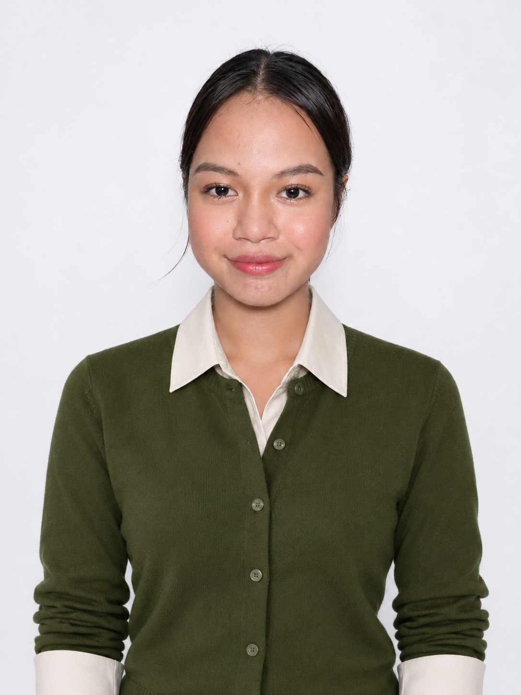

PERSONAL PORTFOLIO · 2026
Ejelyn Cudal
Garin.
A curious learner, an aspiring IT professional, and a work in progress — always finding new ways to learn, grow, and serve.
“Use Knowledge to Serve.”
Still dreaming. Still learning. Still becoming.

J.Ejelyn Cudal Garin
✳ Learning to build
a life with purpose.
STILL LEARNING · STILL BECOMING
a life with purpose.